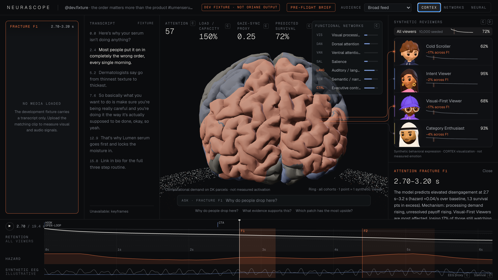
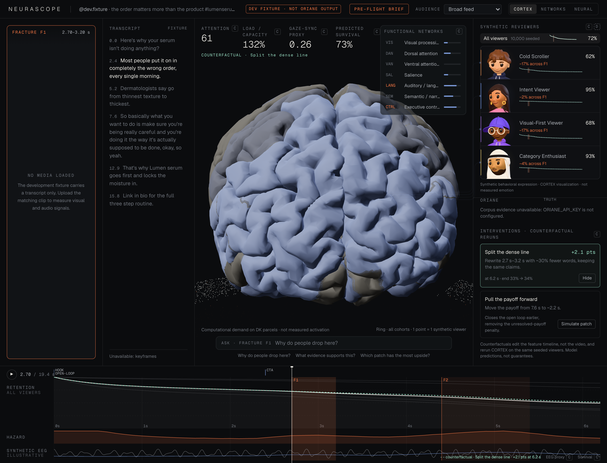
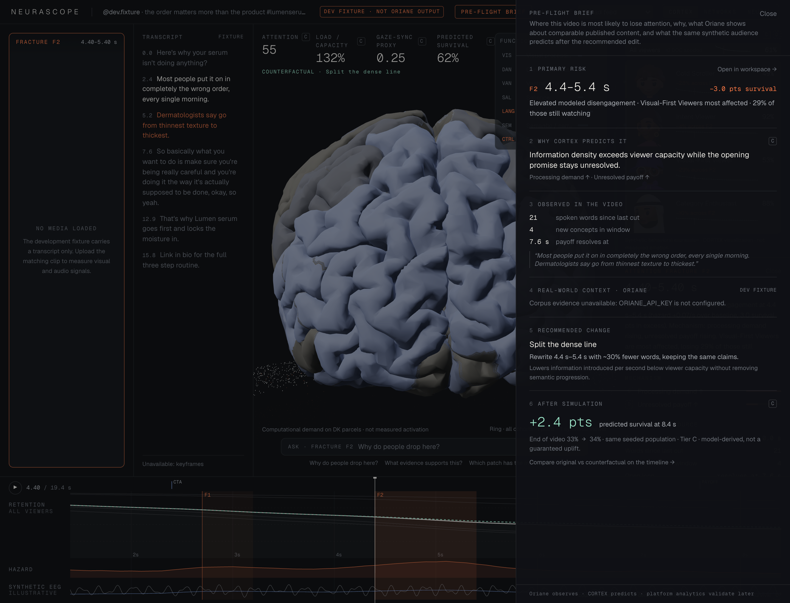

Same seed, same answer.
CORTEX · 10,000 seeded viewers
Four behavioral cohorts · retention · hazard · synthetic EEG

F1 · 2.70–3.20 s
Cold Scrollers −17% · Visual-First Viewers −17% across F1

Split the dense line · +2.1 pts
Rewrite 2.7 s–3.2 s with ~30% fewer words, keeping the same claims.

+2.4 pts predicted survival
Primary risk → why CORTEX predicts it → recommended change → after simulation
Test on synthetic attention before you spend real attention.